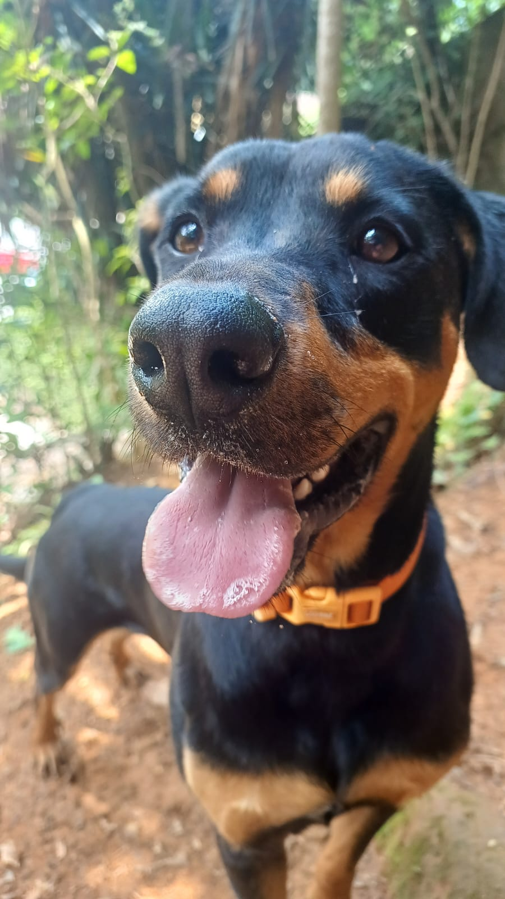
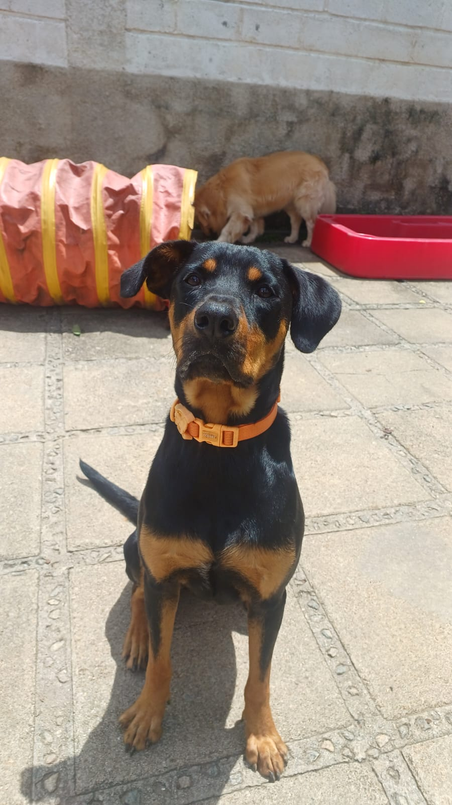
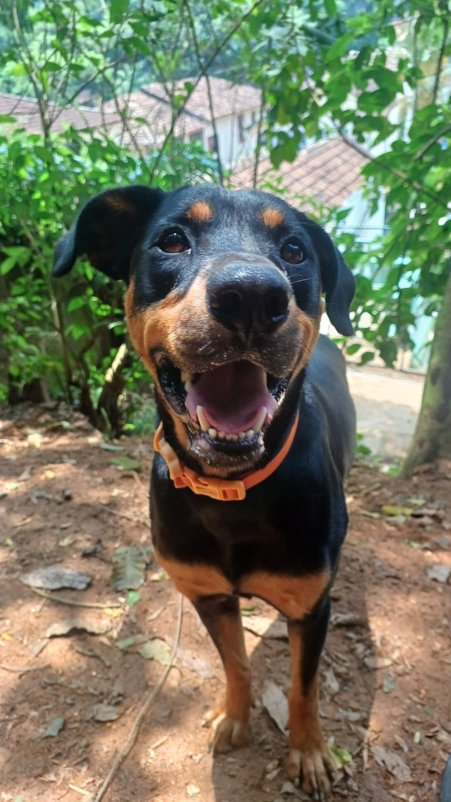

wagner
Sou o típico “cãozinho de bar”.
Sou muito inteligente e gosto de aprender comandos. Gosto muito de brincar com bolinhas e com aumigos. Sou bastante carinhoso e amoroso.



Sou o típico “cãozinho de bar”.
Sou muito inteligente e gosto de aprender comandos. Gosto muito de brincar com bolinhas e com aumigos. Sou bastante carinhoso e amoroso.